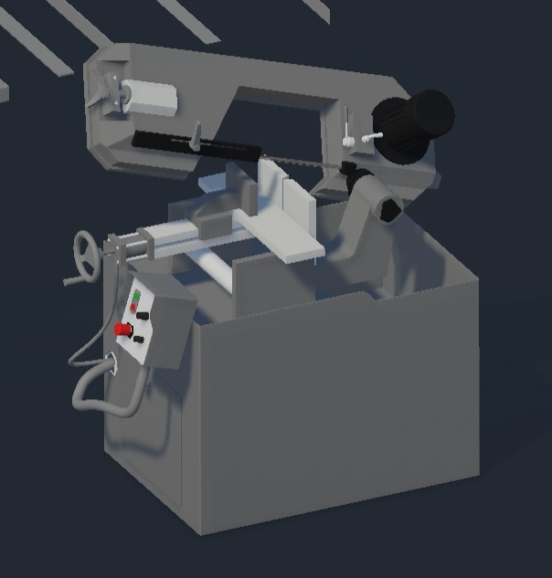

⚙️
🔧
🔁
🪚
×
⚖️ Marco Teórico
La Sierra de Cinta Bandsaw S300DGW es una máquina de corte industrial utilizada para cortar tubos y perfiles metálicos. Su funcionamiento se basa en una hoja de sierra continua impulsada por ruedas. Permite cortes precisos en varios ángulos y con distintas velocidades, participando en etapas clave del proceso de manufactura.
- Historia: Desde la revolución industrial.
- Tipos: Horizontales, verticales, automáticas.
- Partes: Motor, sierra, ruedas, brazo, panel de control.
- Ejes: X (giro), Y (descenso), Z (material).
×
🛠️ Desarrollo del Proyecto en Unity
- Objetivo: Crear una simulación funcional y educativa.
- Estructura: Assets, Scenes, Scripts, Prefabs.
- Unity: Versión 2022.X, WebGL, URP, Shader Graph.
- Componentes: Animaciones, interactividad, efectos de corte y chispas, físicas, UI.
- Flujo: Preparación de escenas, iluminación, cámaras y scripting modular.